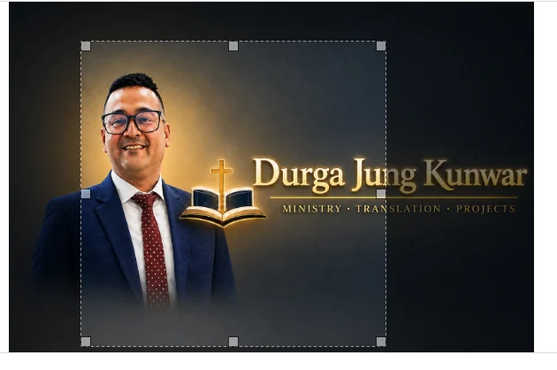
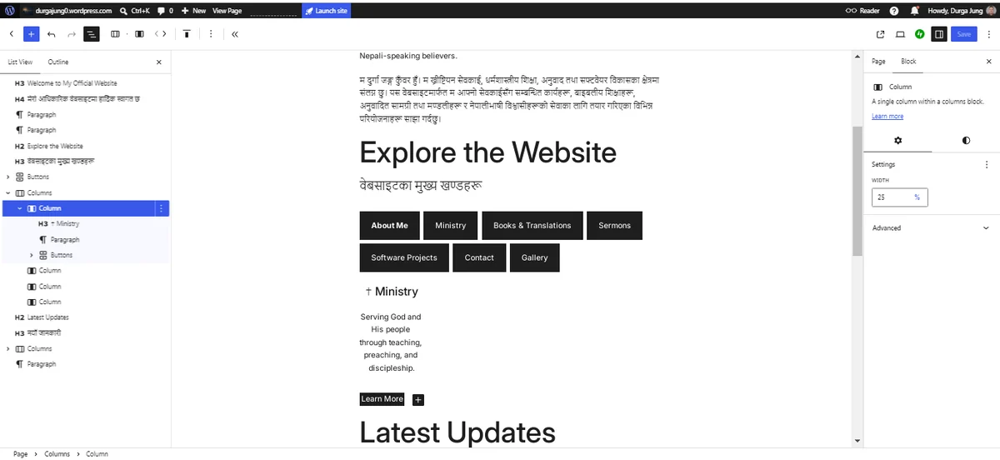

This gallery contains photographs and videos from ministry programs, church activities, seminars, fellowships, translation work, software projects, and other significant events. These materials are shared to document the work, encourage believers, and provide a visual record of various ministry activities.
Please do not copy, republish, or use any photograph or video for commercial purposes without prior permission.
यस तस्बिर तथा भिडियो सङ्ग्रहमा सेवकाई कार्यक्रम, मण्डलीका गतिविधि, गोष्ठी, सङ्गति, अनुवाद कार्य, सफ्टवेयर परियोजना तथा अन्य महत्त्वपूर्ण अवसरहरूसँग सम्बन्धित तस्बिर र भिडियोहरू समावेश गरिएका छन्। यी सामग्रीहरू सेवकाईका कार्यहरूको अभिलेख राख्न, विश्वासीहरूलाई उत्साहित गर्न तथा विभिन्न गतिविधिहरूको दृश्य विवरण प्रस्तुत गर्न साझा गरिएका हुन्।
पूर्वअनुमतिबिना यहाँका कुनै पनि तस्बिर वा भिडियो प्रतिलिपि गर्न, पुनःप्रकाशन गर्न वा व्यावसायिक प्रयोजनका लागि प्रयोग गर्न अनुमति छैन।


